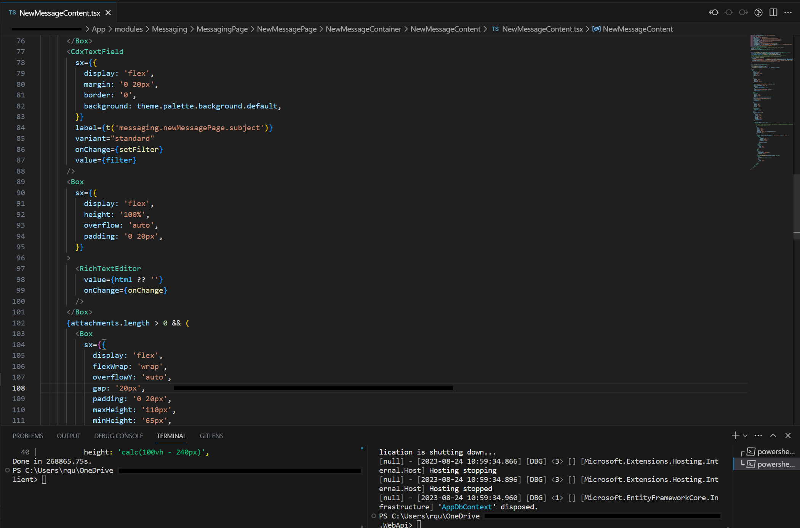

A summer internship focusing on front end design and development.
During the summer of 2023, I worked as an intern at a Bay Area based biotech. The company focuses on monitoring and testing for organ transplant patients, however due to the constant handling of confidential patient information between docotors, transplant centers, and the company itself, there was a demand for an in-house secure messaging platform that would allow for secure communication between all parties.
As an intern, my role was to design an interface that considered the communication needs of doctors and the transplant centers, while also working with software engineers to develop a working front end for said interface.
Initial Design
The new interface was to be integrated within the existing company website, which doctors and transplant centers regularly use to manage patients and test results. There were numerous required features in this design, such as screens for an inbox, sent, and archived messages, the ability to send, receive, and reply, etc. Most of the features were meant to be kept as basic as possible, however, with the focus being on delivering a working first version within my time at the company.
The process began with first understanding the structure of the company's internal page, and understanding how doctors and transplant centers use the site. I also spoke with the HR team to learn about existing concerns clients had with the page. With a list of requirements and notes in mind, I began building a Figma prototype of a proposed design.
General screens and flow of the prototype
Within Figma, I designed screens to fit the necessary requirements, while also experimenting with different possible messaging options. I focused on two prototypes, one that followed a messenger structure that allowed users to have chats, while the other design followed a more traditional email style approach. The screens were designed with existing MUI assets to blend seamlessly into the existing internal website. The designs also included quality of life features such as notifications, filters, and settings.
Final Prototype Demo
After some discussion, it was decided that for the sake of simplicity, we would adopt the email design. The demo depicts what features are expected.
Building the Interface
Due to the existing company site being built in React, the new secure messaging app would also be built in this framework to fit in. Working with other software engineers, I helped build the various components required to create a functioning front end. Each component of the page consisted of various interconnected interfaces and properties, which were all meant to work in unison.
While I worked on the front end, the back end which would connect the app to the server was still in development. Thus, much of the data we used to test the modules were mock files. Although I had experience in web development and Javascript beforehand, working in this environment was a great step up and required plenty of learning and adjusting.
While many of the components had to be written from scratch, some could be refactored from other parts of the company's internal website. Such examples include the filter options, which were originally built for the patient and test result lists. Refactoring code greatly streamlined the process for certain components, but I often had to resort to researching and online documentation to implement certain features.

For the actual structure of the page, we tried to stay as faithful as possible to the original designs I drafted in Figma. We used MUI elements for most of build, as well as the icons to keep the theme. By the nature of being based in a React framework, the HTML was included and rendered through the Typescript files, allowing the page to be highly responsive
Over the process of building the app, some features were dropped while others were modified, such as the archive button now extending the lifetime of a message rather than saving it to a new mailbox, and the sent tab being removed altogether. Some stylistic changes were made as well, such as attached files now being static within the inbox footer component instead of scrolling with the message.
Final Product
While I concluded my internship before witnessing the final product, the front end for the app was mostly complete, with only minor refinement missing. As the back end was still not complete at the time of my departure, the page is still run with mock data, but all the elements are now interactable. This internship was a great learning experience for me, as it was my first time working in a professional environment that required a complex understanding of front end development. It was a challenge that I am glad to have experienced and overcome.